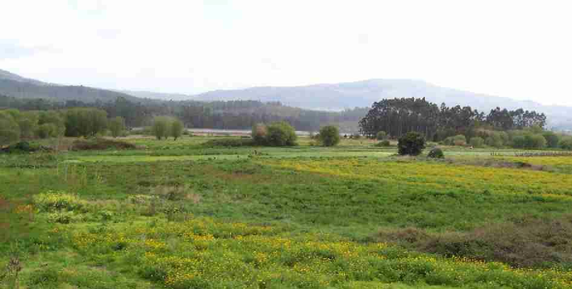
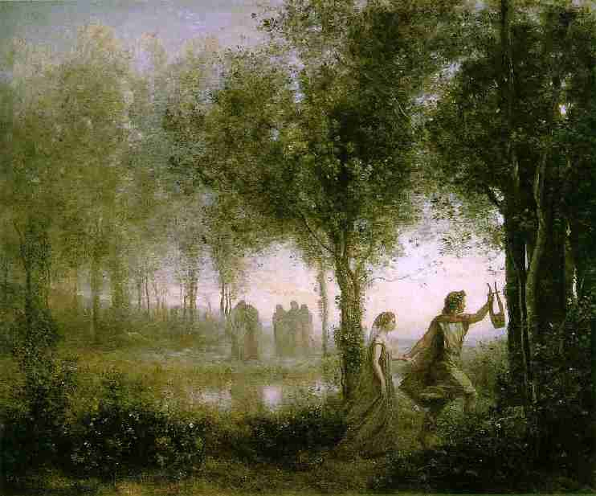
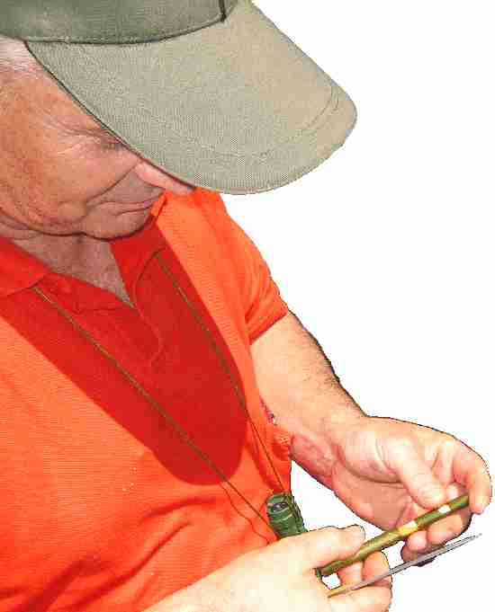
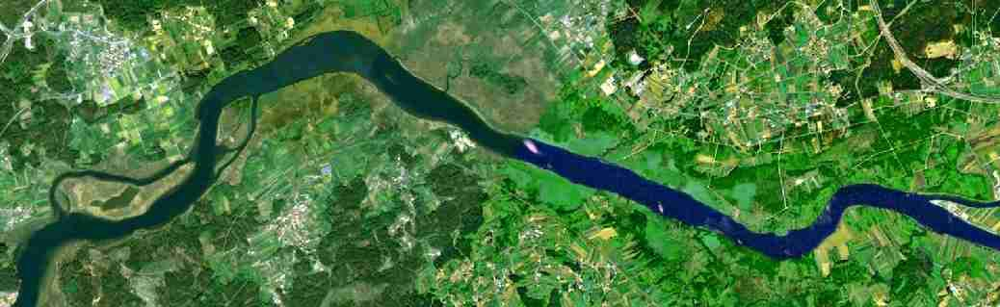
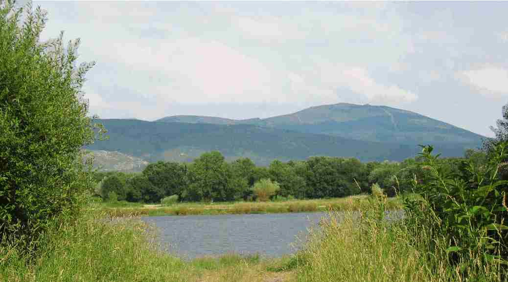

Apresentamos esta pequena guía para as Brañas de Laíño, un dos espazos húmidos máis extensos, descoñecidos e de maior valor ambiental de Galiza. É o hábitat de máis de sesenta especies de aves, algunhas moi escasas ou destacadas, un bo feixe de plantas de elevado interese, e en xeral unha importante reserva da biodiversidade alén da súa rica história etnográfica. En xuño de 2007 a asociación ecoloxista coñeceu que a Dirección Xeral de Costas proxectara para estas brañas unhas “actuacións ambientais” co obxecto de construir unha praia artificial, un embarcadoiro, pasarelas, aparcadoiros e outros elementos relacionados. Analisada a documentación, chegamos á conclusión de que o proxecto non estaba correctamente fundamentado e que peca dun grave descoñecimento da ecoloxía deste espazo. Solicitamos que se submetese a un procedimento de avaliación do impacto ambiental e non se tivo aínda resposta. Verdegaia decide afondar no coñecimento das Brañas de Laíño e contacta con naturalistas, representantes do Concello de Dodro e coa viciñanza. Tivemos a fortuna de dar con xente marabillosa entre a que está Manuel Lorenzo Baleirón, nado no lugar, profesor de ciencias sociais e moi bo coñecedor da braña. Con el puidemos organizar un roteiro en xuño de 2008 a raíz do que escrebeu o interesante artigo que segue.
Setembro de 2008

As Brañas de Laíño
Hai un cadro de Corot, o pintor francés do XIX, no que Orfeo regresa dos infernos con Eurídice, coa lira na man, fuxindo das sombras da morte a través dun bosque asulagado poboado de ameneiros. Eu imaxino a escena nas nosas Brañas de Laíño, na Carrasqueira do Covo ou na Estibada. O nome de Orfeo procede do grego “na beira do río”, “onde medra o ameneiro”, e está relacionado tamén con Bran, o deus celta que se fai ponte no poema de Cunqueiro para que o pobo pase. De ameneiro facíanse os zocos pero tamén os pilotes das pontes pois que non apodrece, e Venecia mesma descansa sobre postes de ameneiro fincados nas augas estancadas da lagoa. Colabora Concellaría.

cadro de Corot "Orfeo conduciendo a Eurídice fuera del infierno"
Hai uns días, organizado pola asociación Verdegaia e polo Concello de Dodro, realizouse un roteiro polas Brañas de Laíño e Manolo Bouzón fíxonos nun pispás un asubío de ameneiro. Non tocou, pero como se tocase. Eu, buscando nos libros e na rede de redes, encontrei que é tradición de Sardeña e dos Pireneos facer frautas de ameneiro e que posiblemente estea relacionada co canto de Bran ou co de Orfeo cando se lamenta pola perda da amada. Cousas veredes…
Agora a braña é a selva selvaggia de Dante, inzada de ameneiros e salgueiros. Cegáronse as pontellas e os esteiros nos que nos bañabamos de rapaces, medraron os canavais e as espadanas, e chegan os toutizos até a beira do río, onde antes se apañaba herba para o gando. Xa non se apaña. Xa non cantan os eixos dos carros no Lavego. Dentro de nada haberá que ver as vacas nos parques zoolóxicos e nas postais. Foron famosos os bois cebóns de Laíño. Fala deles Rof Carballo na Geografia General del Reino de Galicia.
A braña foi durante anos a despensa dos probes. Até as aldeas subíase a herba en cestos de aro feitos de carballo ou de salgueiro e descansábase nos pousos. Os de Cordeiro viñan en barcas buscala, pero había para todos. No verán recollíase a herba seca. En tempos as Avesadas eran terreos de labor, onde labraba o arado de veso. No mapa topográfico durante moitos anos apareceron como As Abadesas e eu sempre me preguntei a que mosteiro pertencerían. Tal vez habería que recluir nel os topógrafos da época.
Daquela o mundo era pequeno e cabía na palma da man, pero as brañas eran sobre todo un territorio máxico, envolto en farrapos de néboas e soños, onde se agachaban bichocas fabulosas e aves que podían ser do paraíso, pozas sen fondo nas que se afundían os carros coas vacas e non se voltaba saber delas. Nas grandes cheas subían os tabuóns dos serradoiros río arriba e unha vez coas marés de agosto ficara varado na Lavanqueira un cetáceo enorme coma a balea de Xonás.
Hai constancia de que a braña era xa espazo comunal no XVIII. Por aquí pasou o padre Sarmiento e despois de ir enumerando unha a unha as nosas aldeas fala tamén das Brañas de Laíño. Están no dicionario de Madoz que un século máis tarde refírese a elas como “as famosas brañas de Laíño”. Ese debe ser o nome que lle deamos. A administración fala delas con diferentes eufemismos inventados para a ocasión (complexo Deza-Ulla, baixo Ulla, Ulla- Umia…e outras parvadas semellantes).
De todos é coñecido o poema de Rosalía “Como chove miudiño, como miudiño chove, como chove miudiño pola banda de Laíño, pola banda de Lestrove…” (Alguén preguntoume unha vez se as bandas eran de música!). Rosalía escribiuno desde as Torres de Hermida, seguramente o lugar onde máis querida se senteu. Eu fun alí este ano cos rapaces do instituto e recitárono no mesmo sitio onde o concebeu a escritora. Rosalía coñecía ben as nosas brañas porque aquí pasou boa parte da súa vida. Foi a derradeira paisaxe que veu cando regresou en tren desde Carril para morrer na Matanza soñando con ver o mar. Tamén tiña unha criada de Bexo, Rosa Fernández, que era ama de cría de Ovidio e de Gala, e viviu unha vida tráxica que merecería ser novelada, pero esa é outra historia. Entre os papeis inéditos de Rosalía, recollidos por Naya Pérez, aparece a copla “elas de Laíño son, collen o xunco na braña, vano vender a Padrón” Despois recóllea tamén o pai de Antonio Machado e aparece incluída nos “Cantos populares españoles” de Francisco R. Marín a finais do XIX. En Padrón había tecedores de liño, de lá e de xunco. O xunco usábase para facer corozas, capas e polainas. Coméntao Antonio Fraguas nun traballo sobre o Catastro de Ensenada, de mediados do seculo XVIII, na terra de Padrón.

As Brañas de Laíño
Miña avoa Amancia contábanos outra copla cando nas noites de verán escoitabamos cantar as rás desde a nosa horta de Tarrío: “Polas brañas de Laíño vintecinco xastres van, con agullas e tesoiras para capar unha ran”. Nunca lla escoitei a ninguén máis. Hoxe tampouco se escoitan as rans. Na edición que se publicou en 1963 con motivo do centenario dos Cantares de Rosalía, Bouza Brey recolle outra moi popular: “De Laíño deben ser, onde elas lavan a cara calquera pode beber”
Perdéronse como diciamos aqueles e outros usos da braña, ao que axudou moito o expolio da lei de Costas: unha insensatez, un sinsentido. Quizais, se somos mariñeiros, teñamos que pedir todos o carnet de mariscadores. Nun Guía para as Brañas de Laíño - 3 litoral arrasado pola especulación urbanística, denunciada estes días por Greenpeace, a lei de costas aplícase en Dodro, 15 km terra adentro. A min a historia recórdame a do barco de Fitzcarraldo no medio da selva. Se non fose dramático sería para botarse a rir. No ano 1992 entregáronse os títulos da concentración parcelaria. A lei de costas é anterior pero aplicouse despois. Debeuse ter previsto semellante dislate. O que nos deron cunha man quitáronnolo coa outra. Hai xente que só ten propiedades na braña, propiedades entregadas polo estado a cambio de outras, pero a administración é cega coma o ollo do cu e ademais acéfala. En realidade o problema non é que non teña cabeza, é que non ten alma. Eso sí, funciona lentamente, pero cando se pon en marcha pode pasar por enriba de nós coma unha apisonadora (a lei de costas, o “ave” - césar os que van morrer saúdante, a vía rápida, o gas …). “Luz e progreso en todas partes… pero as dúbidas nos corazóns” (Rosalía). Todo pasa e nada queda. Visto que non imos volver acomerar as vacas nas brañas, o estado debe reparar o agravio pagando polas leiras un prezo xusto.
O proxecto que pretenden facer, supoño que para lavar a conciencia (se a houbese), non exclúe o anterior. Consta de dúas actuacións, unha na braña de Lestrove e outra na de Bexo. Non vou entrar nelas. Coido que debe someterse á consideración de expertos (outros “expertos” diferentes dos que trazaron a estrada e o “ave” por Manselle) e sobre todo deben discutilo todas as partes implicadas: concello, veciños, ecoloxistas, cazadores/pescadores, administración, técnicos… Verdegaia pide simplemente que se valore o impacto ambiental. Que menos! Hai que agradecer a Santi Moroño e a Sabela Abalo, membros da asociación, que se lembrasen de nós e nos volvesen poñer nos mapas coma cando se estaba cartografiando África.
A braña é neste momento un espazo único, o espazo brañego máis grande de Galicia e alberga unha riqueza ambiental de primeira magnitude. Nela aniña unha subespecie da escribenta das canaveiras (Emberiza schoeniclus subs. lusitanica). É un endemismo da Península Ibérica. Hai once parellas este ano das sesenta que fican no planeta. Sobran os comentarios. Contóunolo Emilio Martínez Sabarís do grupo Anduriña que leva seis ou sete anos vindo anelar aves. Unha tarde do mes de xuño levounos á braña de Dodro e cando un macho de escribenta, un dos últimos da súa especie, 4 - Verdegaia cantou para nós do alto das canibelas o seu canto misterioso e libre, penso que tivemos a sensación de participar nun acto máxico, como quen contempla o derradeiro dos neanderthais. Quizais nós mesmos, máis alá da pura existencia individual, tan só teñamos sentido como especie. Máis nada.


As Brañas de Laíño
A uns pasos de onde estabamos medraban dous exemplares de Thalictrum speciosissimum, xa sen flores. Eu sácaralle fotos había un mes e levábaa visto nalgunhas ocasións outros anos. Emilio informounos de que en toda a provincia da Coruña só se vira dúas veces unha variedade de xunco, o “Schoenoplectus pungens”, ameazado de extinción a nivel mundial (hai contados menos de dous millóns de unidades) pódese atopar tamén na braña, como se poden ver a herba salgueira, a ulmaria, os lirios, a lisimaquia, o frundio, diferentes tipos de mentas, varias orquídeas… Algunhas delas enumerounas maxistralmente Anxo Angueira cando comezamos a camiñada alá nas terras de Bexo, no lugar case exacto onde tamén remata a súa novela Pensa Nao e Amaro boga buscando a liberdade nunha nave que é tamén símbolo da esperanza dun país.
Aves como a folosa acuática (Acrocephalus paludicola) ou o picanzo vermello (Lanius collurio), tamén ameazadas, pódense ver aquí; como se poden ver a garza, o charneco, a aguia peixeira, o gabián, o vichelocrego, o cardeal, o martiño peixeiro (picapeixe)…
de opinións e miradas, e deu para moitas máis historias que non poden ter cabida nestas breves liñas: as fontes minerais de Bexo, os pozos sen fondo do esteiro, a lenda do río de San Lufo, o Pazo de Bendaña, o pasado, o presente e o futuro dos que vivimos aquí, mirando o devalar do río… quedan para outra.
Calquera delas sería suficiente para reclamar a atención sobre estas Brañas de Laíño deixadas da man de Deus, aquí, á beira do pai Ulla que busca xa canso a morte no Mar da Arousa, nesta beira do mundo onde aínda soñan as verdes formigas.
Manuel Lorenzo Baleirón
A reliquia de Laíño A escribenta das canaveiras, na subespecie lusitánica, ten a súa maior poboación do mundo xusto aquí no concello de Dodro, nas Brañas de Laíño. En 2002, de menos de 100 parellas que existían, máis de 50 estaban nestas brañas, no 2007 o censo recollía 19 parellas e no 2008 só 11 en Dodro das 64 estimadas! A subespecie E. s. lusitanica é moi difícil de diferenciar da subespecie nominal mesmo colléndoos na man. Porén, sorprende que os seus hábitos son moi diferentes: entanto a subespecie nominal é migratoria -e no inverno hai moitas en Dodro- no verán só fican as da subespecie lusitánica que bota a vida sedentaria nestes lares.
Ten o tamaño dun pardal. En plumaxe nupcial, o macho caracterízase por ter a cabeza, o pescozo e o papo de cor negra cun bigote branco que se prolonga polo peito e o ventre. Partes dorsais e ás de cor parda arroibada, con raias escuras. Rabadela agrisada. As rectrices son de cor branca. Patas e bico escuros. Femia e inmaturos semellantes ao macho en plumaxe invernal, isto é, apardazado na parte da cabeza. Aniña en canaveiras ou espadanais ao final da primavera. Chocan 4 ou 5 ovos e os pitos voan ao cabo de dúas semanas. Poden pór dúas postas.
A súa dieta baséase en sementes de plantas acuáticas e gramíneas, e maiormente de insectos e larvas. Cando se ollan a espenicar nas flores das xuncas, nas canas ou no millo, na maior parte das ocasións ao que están é a lle comeren as arañas e os pulgóns. Hai unhas avelaíñas que tecen unha arañeira para poren os ovos nas flores dos brizos que son moi abondosos na braña. Cando eclosionan ínzase a braña das eirugas, cadrando xusto cando están a criar os pitos da escribenta e outros paxaros servíndolles moi ben de mantenza. Finalmente instálanse na cañota do brizo para se transformaren en pupas. Este verme élles tamén un extraordinario alimento do que tiran proveito estas aves facéndolle estratéxicamente un furo no talo.
Mudan as súas preferencias de hábitat segundo a estación do ano, gostando no verán das áreas húmidas dos ríos, lagoas e esteiros; entanto que no inverno escollen campías, cultivos e xunqueiras. Esta subespecie é endémica da península ibérica, sen que se coñeza con precisión a súa área de distribuición. Ocupa principalmente zonas húmidas costeiras con abundantes canaveiras onde procura os insectos que compoñen a súa dieta durante a época de reprodución. Hai menos dun cento de parellas reprodutoras en toda Galiza, distribuídas principalmente polo eixo atlántico. Algunha outra parella anda pola cornixa cantábrica e polo norte de Portugal. Está ameazada principalmente pola destruición das zonas húmidas e pola intensificación agrícola, que reduce a disponibilidade dos grans dos que esta especie se alimenta ao longo do inverno.
Da conservación das boas condicións que se dan nas Brañas de Laíño, depende a existencia ou desaparición desta especie.
moito máis común fulepa das xunqueiras. Diferénciana desta, a cor máis contrastada da plumaxe, cos debuxos negros do lombo e as ás moito máis marcados. O deseño da parte superior da cabeza é especialmente rechamante: dúas faixas negras ou castañonegras relativamente largas percorren a cabeza desde a parte superior da base do peteiro até a caluga, e no medio outra central de amarelo crema. Teñen unha "cella" crema ou algo máis clara. As patas son amarelas alaranxadas ou da cor da carne. Son migradores de longa distancia, que se desprazan seguindo a costa do mar do Norte e do Atlántico até o oeste de África. Os seus lugares exactos de invernada son descoñecidos e só hai pouco se descubriu unha ampla poboación europea que pasaban o inverno na reserva nacional de aves de Djoudj, no Senegal.
Outro parente, a Folosa Grande (Acrocephalus arundinaceus) tamén está citada nas Brañas de Laíño.
Miden uns 13 cm. de cumprimento e teñen unha envergadura de ás de entre 17 e 21 cm. A parte superior é castaña agrisada con marcas escuras, a inferior é amarelada. Teñen a gorxa abrancazada. Na cabeza amosa un "pucho" negro e ten unha marca superciliar ou cella de cor gris clara. A coloración dos dous sexos é semellante. Cría en Europa e no leste e centro de Asia. É unha ave migratoria de longa distancia. Os exemplares europeos, presentes no continente entre abril e outubro, pasan o inverno ao sul do Sahara, unha viaxe de até 6000 km. para a que deben acumular boas reservas de graxa. O seu hábitat son as xunqueiras e a vexetación mesta das beiras de ríos, lagos, brañas e outras zonas húmidas. Aliméntanse de insectos, arañas, pequenos invertebrados e bagas. Crían entre maio e xullo en roladas de 4 a 6 ovos.
O mito grego sobre a fidelidade do picapeixe ficou vivo até os tempos modernos. O naturalista Conrad Gesner en 1669 escribía que a femia chiaba laiándose cando o macho morría..
Ten o corpo curto e de aspecto sólido mais rechamante polas súas cores azuladas, as patas e as plumas da cauda son curtas e as ás largas, medíndolle o corpo uns 16 cm. Aliméntanse de peixes, insectos acuáticos, larvas, pequenos crustáceos e cágados. Poden tragar peixes de até 9 cm. Axexa nunha póla enriba da auga até que topa unha presa, mergúllase na auga en diagonal coa cabeza por diante e acelerando con sacudidas curtas das ás. Durante a inmersión os ollos están cubertos por unha membrana nictitante. Xusto antes de capturar a presa fréanse abrindo as ás. Sobe á superficie coa cabeza pegada ao peito e engala desde a superficie da auga. Todo este proceso non dura máis que dous ou tres segundos. Se lle falta un pousadoiro que lle dea xeito pódese mergullar directamente desde o ar. Fan o niño furando nunha parede vertical de terra. Pon uns 6 ovos brancos que chocan alternativamente durante 20 días. Os exemplares novos poden viaxar até mil quilómetros para se asentaren a vivir.
Estado non preocupante a nivel mundial, aínda que se reducen as áreas de cria
Hai citas na desembocadura do Ulla deste pato nadador, que é o máis pequeno dos que viven en Europa, cun cumprimento de entre 35 e 36 cm
Coma moitos outros parrulos, amosan un notábel dimorfismo sexual. Os machos teñen unha plumaxe de gala predominantemente agrisada. A cabeza é castaña brillante, cunha faixa lateral larga verde, que rodea os ollos e chega á caluga. A parte posterior do corpo dos machos é negra cun triangulo de cor amarelada. As femias son amarronadas, coa cabeza máis escura e co pescozo e as meixelas cun raiado fino pardo. A plumaxe de eclipse dos machos, á que mudan entre xuño e agosto e que perden entre setembro e novembro, é moi semellante á das femias. Son principalmente vexetarianos, malia que capturan tamén invertebrados que procuran entre a lama. O seu pequeno tamaño obrígaas á procura da mantenza na auga por riba dos 20 cm. de calado.
É un parrulo que se deixa ver moi ben. Nunha visita ás brañas na compaña dun cazador e un ornitólogo asistimos ao contraste de opinións entre o primeiro que vía nesta especie "unha praga" e o segundo que falaba dun censo de só 110 machos no 2008. Hase ser moi cauteloso á hora de valorarmos se unha especie é abondosa ou todo o contrario, por que os seus costumes pódennos levar a unha falsa percepción.
Probabelmente a especie de parrulo máis coñecida, e a orixe de case todos os parrulos domésticos. O aspecto do macho na época reprodutora é moi característico (foto). Entre xullo e agosto o macho perde a plumaxe de gala e o seu aspecto é similar ao das femias, agás pola cor do peteiro, que nas femias é gris escuro ou acastañado. A plumaxe da femia é de cor castaña clara con debuxos escuros. Os lavancos, coma todos os parrulos mudan a plumaxe dúas veces ao ano. Untan continuamente as plumas coa graxa procedente dunha glándula situada no comezo da cauda para tornaren a entrada da auga. Collen a graxa co bico e esténdena pola plumaxe. As formas domésticas ou semidomésticas poden ter cores diferentes da forma selvaxe. En estado selvaxe poden vivir entre 10 e 15 anos. A conduta migratoria é moi variábel.
Viuna vir Emilio Martinez Sabarís, aquela tarde de xuño na braña, batendo suavemente as ás e co pescozo a xeito de ese, voando até un pousadoiro a carón do Ulla. El sabía que ía acougar alí, armou o telescopio e puidemos gozar do espectáculo en primeira fila.
Da familia das ardeidas e da mesma orde que a cegoña, as Ciconiiformes. É a garza máis abundante da Europa. Posúe un cumprimento de arrededor de 95 cm, unha envergadura de 185 cm e peso de 1,6 a 2 kg. Pode vivir uns 25 anos. Os xuvenís apresentan cores máis claras, dorso cincento acastañado e o ventre branco raiado de negro. Hábitos solitários fóra do período de aniñamento. Normalmente anda en extensións de auga doce con pouca fondura e costas marítimas. Mantense á espreita e captura a presa co peteiro facendo un rápido movimento coa cabeza. Aliméntase principalmente de peixes, mais non despreza batráquios, réptis, pequenos mamíferos, insectos ou moluscos terrestres e acuáticos. Dixire ben as espiñas mais regurxita os pelos dos roedores na forma de bolas. Reprodúcese de febreiro a xullo pondo de 3 a 6 ovos cubertos alternadamente polos dous proxenitores durante 25 a 28 dias.
Diante a femia, despois o macho e ao fondo un gabián noviño. Foron perseguidos acusados de “danar a caza” mais foi o DDT, que chegaba pola cadea alimentar o que máis lles afectou.
É unha ave de presa que amosa unha grande diferencia entre o tamaño dos machos e as femias. Estas son case dúas veces meirandes que os machos. Son aves florestais que crían ás veces nos parques dalgunhas cidades. Aliméntanse case exclusivamente de paxaros. Despois dunha forte redución das súas poboacións europeas por causa do DDT estas recuperáronse despois do ano 1950. As súas ás relativamente curtas e largas e a cauda relativamente longa non lle permiten un voo extraordinariamente rápido. Porén, fan que se poida mover con axilidade en espazos reducidos. Patas e gadoupas están adaptadas á caza de paxaros pequenos e rápidos. Os gabiáns son sedentarios ou migratorios dependendo da área onde moren. En Europa as tendencias migratorias aumentan de sudoeste a nordeste. Durante a incubación e os primeiros días dos pitos, é o macho quen mantén a femia, que se encarga de chocar os ovos case en exclusiva. Despois segue a facelo levándolle as presas a un lugar nun raio de 50 m.
Hai que ir ben ao axexo, e na compaña de quen nos poida informar por que pode andar algunha a voar polas foces do Ulla. Vímola tamén con Emilio Martínez Sabarís en xuño de 2008. É unha marabilla e un privilexio recibila nas Brañas de Laíño!
É unha ave rapaz bastante grande e especializada en capturar peixe. A aguia peixeira ten a plumaxe do peito branca, ás longas e estreitas que apresentan nas extremidades "pulseiras" negras, o que lle dá unha aparencia distintiva. Está moi ben adaptada para o seu rexime alimentar: pode pechar o nariz para evitar a entrada da auga e as dedas están provistas dunha especie de escamas pontiagudas que lle facilitan o agarre das presas. O seu voo é lento, alternando o planeo e o bater de ás. Aniña nos lagos e lagoas de auga doce, ás veces nas costas. Emparéllanse de por vida. As femias pon 3 ou 4 ovos a fins de abril. Até hai trinta anos as aguias peixeiras estiveron a piques de se extinguir. Porén, desde a proibición do DDT e as políticas proteccionistas en moitos países a súa poboación estase a recuperar. En Europa hai arredor de 8.000 parellas, sobre todo en Escandinavia, Escocia e Rusia. En Galiza está catalogada como migratoria e invernante.
O seu nome procede do seu canto, unha longa frase (uilauiuuuu) que imita a locución “víchelo-crego”
Tamén chamado oureol, é o único membro da familia dos oureois que vive nas zonas tépedas do hemisferio norte. Especie migratoria, óllase no verán en Europa e nas rexións occidentais de Asia, no entanto o inverno bótao nos trópicos. Habita en árbores grandes de folla caduca en fragas, soutos, carballeiras e parques, con frecuencia nas ribeiras dos ríos. Fai un niño moi limpiño e estábel durante anos na gallada das pólas. Adoita facelo en amieiros e contén entre tres e seis ovos. A femia do vichelocrego comeza tarde a facer no niño e a incubación dura uns quince días. A súa alimentación baséase en insectos e froita, especialmente figos e cereixas, de aí que nalgunhas partes se lle chame galo cereixeiro. En tamaño é coma o merlo, ou mesmo lixeiramente maior. Na foto un macho. A femia, pola contra, é verde e gris.
Pouca xente diría hoxe que anda a lontra polas Brañas de Laíño, unha consecuencia dos seus hábitos nocturnos e de viviren os seres humanos menos en contacto coa braña.
É un mamífero da familia das mustélidas. Vive na Europa, Asia, parte sul da América do Norte e ao longo de toda a América do Sul, incluíndo o Brasil e a Arxentina. O seu hábitat natural é na beiramar ou a carón dos ríos onde procura a mantenza a base de peixes, crustáceos, reptis e menos frecuentemente aves e pequenos mamíferos. Xeralmente a lontra ten hábitos nocturnos, durmindo de día na marxe do río e acordando á noite para se alimentar. Os grupos sociais están formados polas femias e as súas crías, os machos non viven en grupos e só se xunta a unha femia na época de procriación. A lontra adulta mide de 55 a 120 cm de cumprimento (incluínda a cauda) e chega até os 15 quilos. Aínda que sexa un animal carnívoro e selvaxe, a lontra é dócil e gosta de brincar coas persoas. Viuse diminuída a súa poboación pola destruición dos hábitats e a contaminación por produtos químicos.
Na fonte das augas sulfurosas de Bexo poderemos topar estes animaliños da familia terrestre das chinchas e que foron quen de se adaptaren á auga. Mália á súa fasquía e o seu nome polo visto non pican (pola documentación que puidemos consultar).
É un insecto acuático de 17 a 22 mm de cumprimento, que se axuda para respirar duns tubiños na cauda que apañan unha burbulla de ar da que vai consumindo osíxeno no seu mergullo. Este sistema é ademais dinámico, e ao que o insecto vai respirando favorécese que máis osíxeno do que está disolto na auga vaia pasando á burbulla prolongando a duración do mergullo. Ten tres pares de patas, sendo as dianteiras prensoras e as outras locomotoras. As ás, que lle van saíndo pouco a pouco, non lle serven para voar. Viven en lagoas e augas de pouco movemento e fondura. Aliméntanse principalmente doutros insectos acuáticos.
Manuel Lorenzo Baleirón. Profesor de ciencias sociais do Instituto de Padrón e veciño de Dodro. Apaixonado coñecedor deste espazo desde a súa infancia e o noso guía no roteiro tanto en asuntos naturalistas como na historia e tradicións da braña. Autor das fotografías de prantas (agás Myrica gale) Emilio Martínez Sabarís. Ornitólogo do Grupo de Anelamento Anduriña, que nos achegou unha chea de datos, acompañándonos pola braña para a preparación dos roteiros con enorme entusiasmo e un extraordinario coñecemento da natureza do lugar Agustín Alcalde. Ornitólogo da Sociedade Galega de Historia Natural, que nos axudou a encamiñar esta acción achegando os primeiros datos e informacións. Vitoria Rei Mariño. Concelleira de Dodro, quen nos facilitou o contacto coas persoas axeitadas e foi unha excelente anfitrioa Grupo de anelamento Anduriña. Informe sobre a avifauna dos canaverais do esteiro do río Ulla, Rede Natura 2000, e propostas para mellorar a súa protección, 2004. Consellería do Ambiente da Xunta de Galiza. Páxina de Internet http://medioambiente.xunta.es/espazosNaturais. www.asturnatura.com. Páxina na internet. cunha extensa base de datos debiodiversidade do noroeste peninsular Galipedia e Wikipedia. Enciclopedia colaborativa na internet. www.insectariumvirtual.com e www.herbariumvirtual.com Bases de datos colaborativas de biodiversidade ibérica na Internet Alcaraván. Bitácora de aves do Val Minhor. http://avesdominhor.blogspot.com/2007/08/folosaacuticanoval. html. Martrolas.Bitácora persoal http://martrolas.blogspot.com/ para a foto da capa. Instituto Xeográfico Nacional Ministerio de Fomento. Mapas Topográficos Nacionais de España. Folla MTN50 120 (0408) Padrón 1:50.000, e folla 120III (716) Catoira 1:25.000 GoogleEarth e GoogleMaps Sistemas de información xeográfica na Internet. Xosé Ramón García Pequena flora de Galicia. Ed. Follas Novas, 1979 Roger Phillips. Flores silvestres. Ed. Blume, 1986.